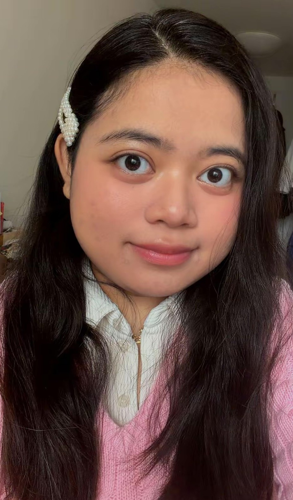

a little more about me

hi again!
I'm Michelle, a Multimedia Production student based in Germany, interested in bringing ideas to life through different forms of creative expression.
I enjoy the process of turning an initial thought into something tangible. Whether it's developing a visual narrative, experimenting with colours and materials, or figuring out how to communicate an idea through a completely different medium, I like exploring the possibilities before settling on a direction.
My work moves between publications, filmmaking, digital design, and other creative experiments. Rather than sticking to one particular medium, I'm interested in finding the approach that best serves each idea.
how I approach things
What I enjoy most about creating is the hands-on process of bringing an idea to life. I like figuring things out as I go, experimenting with different techniques, and learning whatever I need to make something work.
Sometimes my ideas are a little more ambitious than my technical abilities can keep up with, but I think that's part of what makes the process interesting. Each project gives me a reason to learn something new, improve what I already know, and get a little closer to what I originally imagined.
creative interests
I enjoy working across disciplines and exploring how different mediums can shape the way an idea is experienced.
find me elsewhere
Feel free to reach out or take a peek at what I'm up to outside this little corner of the internet.